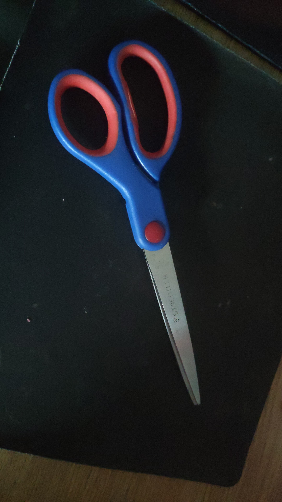

-
Test Image - Scissors

Output on Google Lens
Scissors
Output on MobileNet model
Sunglasses
*****Results*****
Google Lens wins!
*Results may change depending on webcam/phone camera
I have tested an image of scissors using 2 models: MobileNet and Google Lens, google lens was more accurate in this test.
According to my results: Google Lens is more accurate.